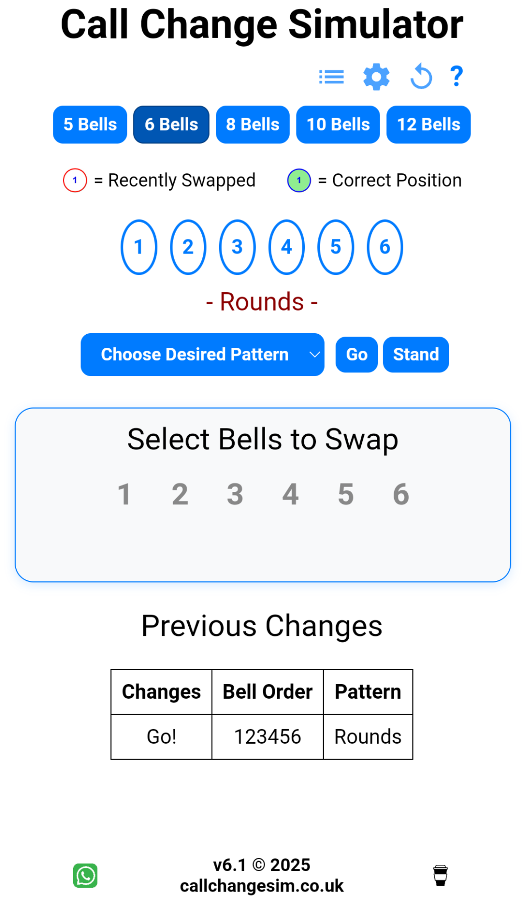

Getting Started with Call Change Simulator#
Here's how to ring a short sequence of changes on Call Change Simulator, the simple "Queens and Back" sequence.
- Open the page https://callchangesim.co.uk and leave everything at defaults. You should see this page. To understand the components of the display, refer to the page Controls
 - Press the Go button
You'll notice that under the round numbers showing the current bell order it says- Rounds -. That's because the bells are, indeed, ringing rounds. Let's change that - In the "Select Bells to Swap" box, press
2followed by3. The following will happen:- The order of the bells played will change - you'll hear this
- The displayed order of the bells (in the circles) will change: "2" will be after "3"
- There will be red borders around the circled numbers "3" and "2": this is because they moved at the last change
- The word
- Rounds -will disappear. That's because we're not ringing rounds any more. - At the bottom of the screen under "Previous Changes" you'll see the called change and the new order. Each time you make a change a new line will be added to the top of the list. The line at the top of this section should always show the same order as is currently ringing.
- Now we'll make another change: we'll press
4followed by5.
You'll see that the order of ringing bells has changed again, the latest changed pair are highlighted in red and a new line has been added at the top of the journal - One more change: press
2followed by5
Another pair of bells has swapped and you'll hear a familiar sounding pattern. You'll notice that- Queens -has appeared under the circled numbers. That's because this pattern is, indeed, called Queens. In the journal at the bottom you'll also see that this change is labelled as Queens - Now lets get back to Rounds. To do this we make the following changes:
5then2("Five to two")- "Three to Two"
- "Five to Four"
If that went right, the two indicators (under the circled numbers and in the journal) should both sayRounds
Congratulations, you've rung to Queens and back! Now refresh the page, start again and do that without referring to these notes. Pick one of the inside bells and, at each change, take note of the two bells ahead (under you) and one bell behind (over you) as well as your position. Keeping track of these bells will help you when you get called.